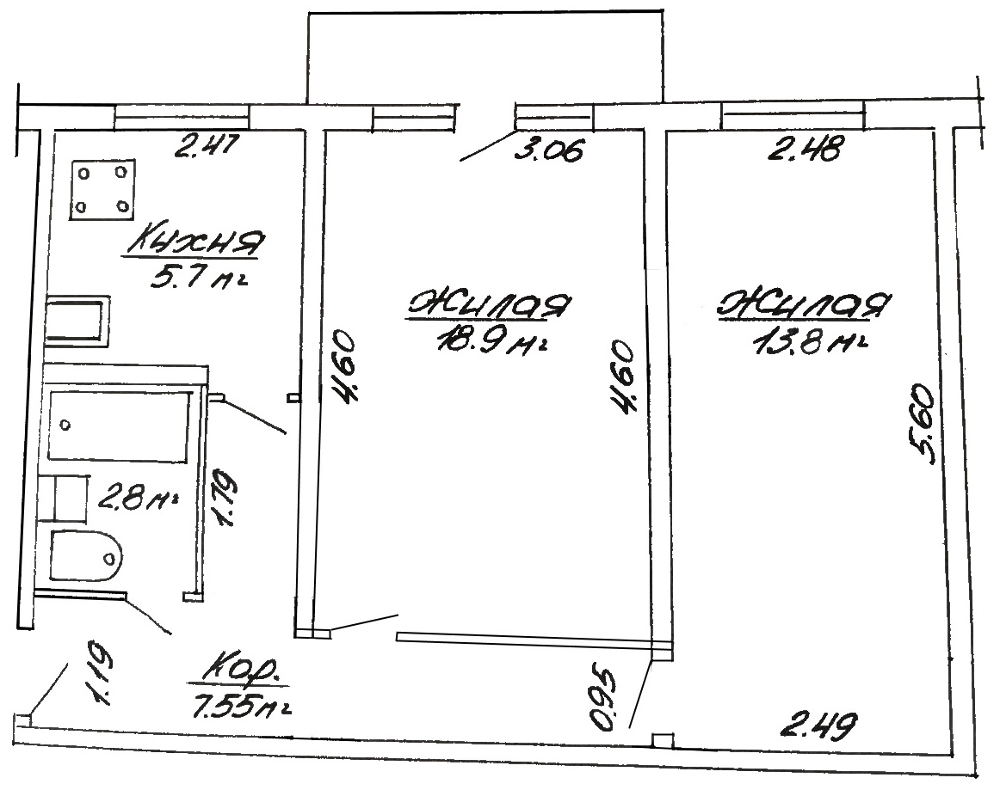
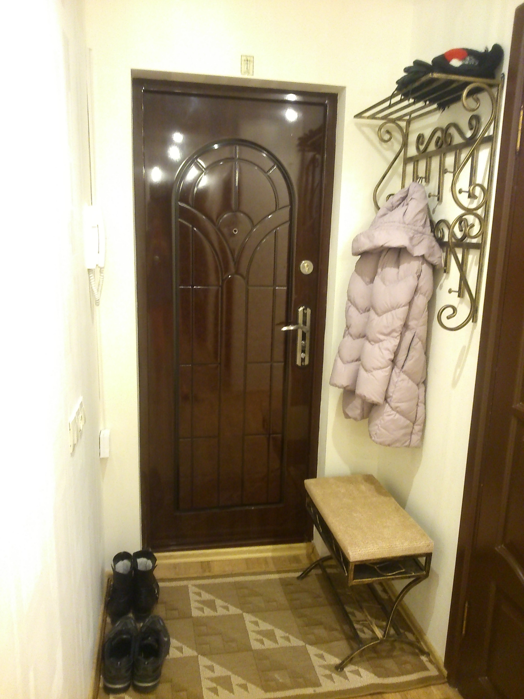
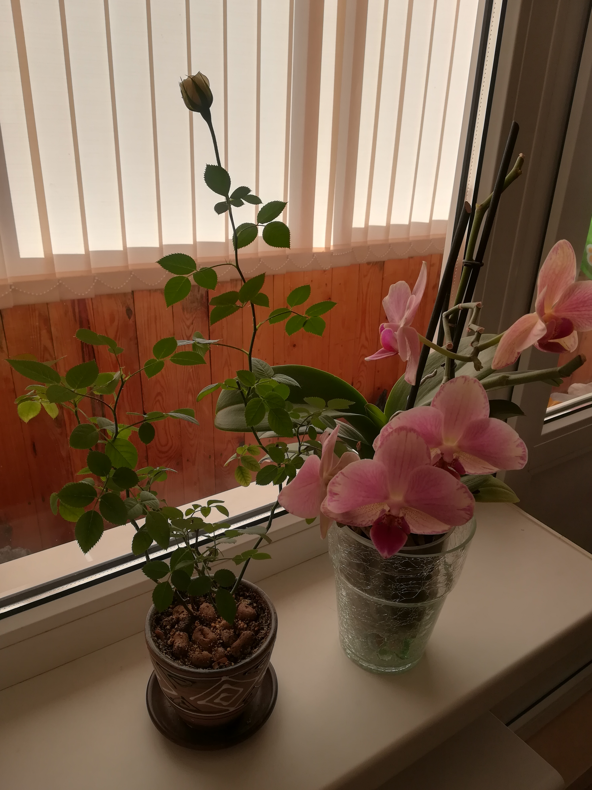
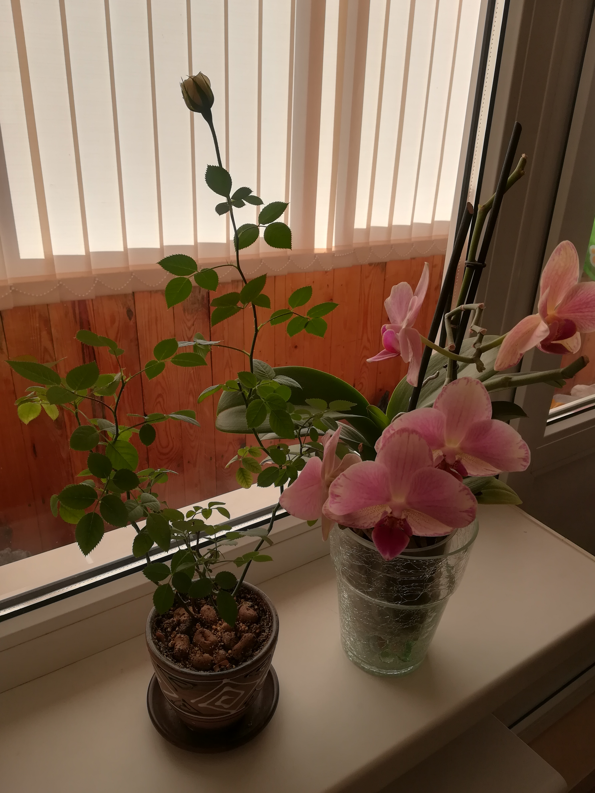

В отличие от множества имеющихся в продаже сейчас квартир в хрущевках - это полноценная двушка,
а не “однушка с огромным коридором”.

В 2015 году в квартире выполнен ремонт в светлых тонах, создающий одновременно уют и простор.
Не было и нет домашних животных.
Можно заселиться сразу же. При необходимости можем (за отдельную плату) оставить всю мебель (Involux), бытовую технику (Bosch, Ariston) и др. (см. в конце страницы).
Состояние квартиры видно на фотографиях.

В 2019 году уложен свежий линолеум на фанеру 3мм.
В стоимость квартиры входит:


В стоимость квартиры входит:


В 2018 году на кухне былы поклеены свежие обои (поддающиеся аккуратной мойке).
В стоимость квартиры входит:

В 2019 году ванная была покрыта акрилом, и был установлен смеситель Frap.
В ванной остаются зеркало, полочки, держатели и т.п. (все, кроме плетеной корзины для белья).
 

В 2015 году деревянные рамы были заменены на аллюминиевые, частично была обновлена вагонка.
Окна выходят на запад. В квартире светло, в солнечную погоду можно воспользоваться роль-шторами и жалюзи на балконе (оставляем, входит в стоимость квартиры). Также на балконе остаются две сушилки, прикрученные к потолку.
Помимо стандартного телевидения можно пользоваться:
Можно подключить:
За отдельную плату помимо того, что остается в квартире можем оставить: